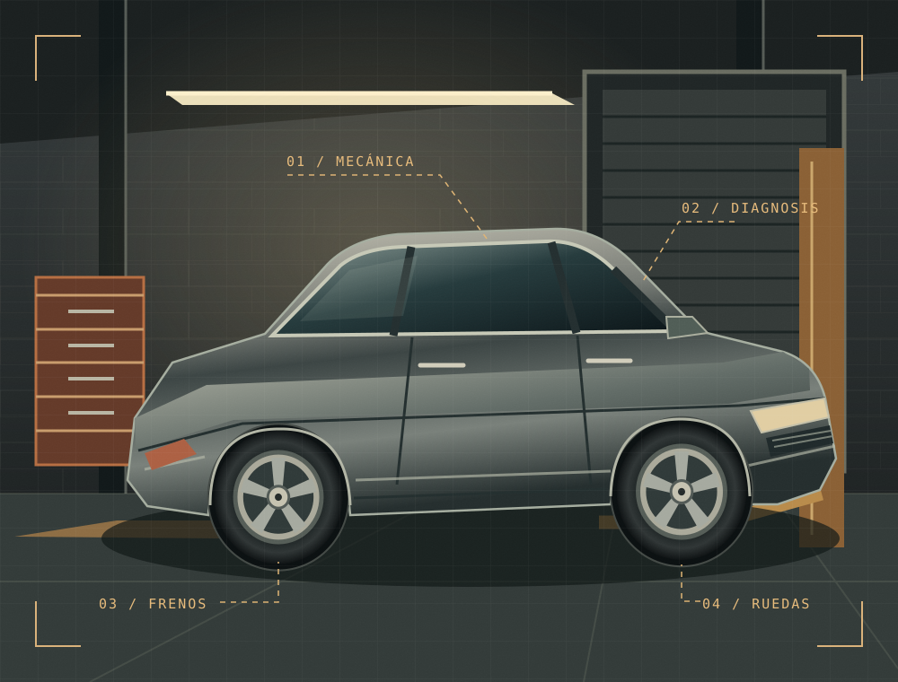

Clientes que llevan más de diez años.
Una opinión de abril de 2025 destaca los años de fidelidad, el buen trato y la experiencia de Fran.
OFICIO, EXPERIENCIA Y CONFIANZA
Mecánica multimarca en Fuenlabrada. Un trato cercano, un diagnóstico claro y la tranquilidad de saber en qué manos dejas tu coche.

01 / NUESTROS SERVICIOS
Desde una revisión periódica hasta una avería difícil de localizar. Cuéntanos qué le pasa a tu vehículo y vemos cómo ayudarte.
02 / NUESTRA ESENCIA
Hay talleres que se conocen por el nombre de quien está al otro lado del mostrador. La Paz 99 es uno de ellos. Fran y la historia del taller forman parte de una relación de confianza con muchos conductores de Fuenlabrada.
Clientes que vuelven año tras año, vecinos que recomiendan el taller y personas que buscan una segunda opinión. Esa es la mejor carta de presentación.
03 / LA VOZ DE NUESTROS CLIENTES
Una opinión de abril de 2025 destaca los años de fidelidad, el buen trato y la experiencia de Fran.
Un cliente cuenta que acudió con un Mercedes después de pasar por otros talleres y encontró una solución aquí.
En las opiniones aparecen con frecuencia el asesoramiento, la honradez y el trato personal.
04 / PREGUNTAS FRECUENTES
Lo importante es que tengas las cosas claras.
Somos un taller multimarca. Consulta con el taller la compatibilidad con tu vehículo y la disponibilidad del servicio concreto.
Sí, puedes consultar disponibilidad por teléfono. En esta demo también puedes probar cómo sería una solicitud de cita online.
Describe los síntomas que has notado: ruidos, testigos o cambios en la conducción. El taller puede valorar los siguientes pasos.
Depende del vehículo, la avería y las piezas necesarias. Contacta con el taller para conocer las condiciones y solicitar presupuesto.
En Fuenlabrada, Madrid. Llama antes de desplazarte para confirmar la dirección actual y el horario.
05 / ESTAMOS CERCA
Cuéntanos qué necesitas. El primer paso es una conversación.
Confirma la dirección antes de venir.
Buscar taller en el mapa ↗Consulta el horario y la disponibilidad por teléfono.